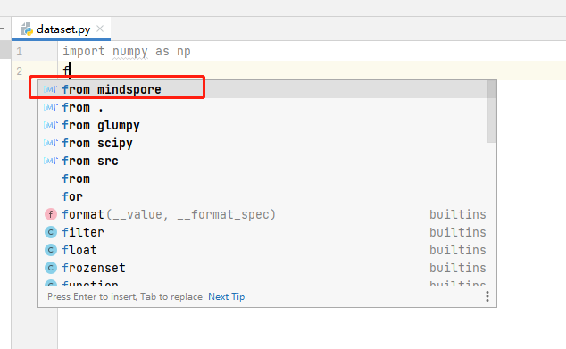

PyCharm插件使用指南
VSCode插件使用指南
RELEASE NOTES
提供基于MindSpore项目的AI代码补全。
无需安装MindSpore环境，也可轻松开发MindSpore。
打开Python文件编写代码。
编码时，补全会自动生效。有MindSpore图标的条目为MindSpore Dev Toolkit智能补全提供的代码。

PyCharm的2021以后版本，会根据机器学习重新排列补全内容。此行为可能导致插件的补全条目排序靠后。可以在设置中停用此功能，使用MindSpore Dev Toolkit提供的排序。
关闭此选项前后的对比。
关闭后。
关闭前。